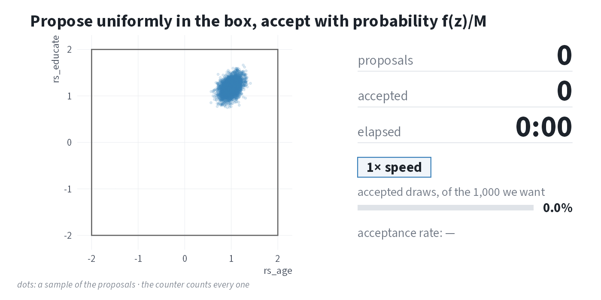

MCMC
Metropolis algorithm · HMC and Stan · {brms} · LOOIC · multinomial logit
Lecture 07 · POS 5747 · Tuesday, October 6, 2026
Weekly assessment
15 minutes · closed book
Today
| Time | Min | Section |
|---|---|---|
| 9:15 | 10 | Where we are |
| 9:25 | 35 | Metropolis |
| 10:00 | 25 | Stan |
| 10:25 | 5 | Break |
| 10:30 | 15 | {brms} |
| 10:45 | 15 | LOOIC |
| 11:00 | 20 | Multinomial logit |
| 11:20 | 10 | Wrap |
Where we are
Bayes’ rule
\[ \underbrace{f(\theta \mid y)}_{\text{posterior}} \propto \underbrace{f(y \mid \theta)}_{\text{likelihood}} \times \underbrace{f(\theta)}_{\text{prior}} \]
Toothpaste cap
- prior: \(\text{beta}(3, 15)\)
- data: \(k = 8\) tops in \(N = 150\) tosses
- posterior: \(\text{beta}(3 + 8, 15 + 150 - 8)\) \(= \text{beta}(11, 157)\)
Bayes’ rule → posterior → sample
Last week: rejection sampling
Algorithm: Rejection Sampling
Inputs:
- The unnormalized posterior \(f(\pi \mid y)\) on \([0, 1]\).
- Desired number of draws \(S\).
- Envelope constant \(M\) such that \(M > f(\pi)\ \forall \pi\).
Algorithm:
- Initialize: Set \(s = 1\).
- Repeat while \(s \le S\):
- \(z \sim \text{Uniform}(0, 1)\).
- \(u \sim \text{Uniform}(0, 1)\).
- Accept–reject step: If \(u \leq f(z)/M\), accept: set \(\pi^{(s)} = z\), \(s \leftarrow s + 1\). Otherwise, reject \(z\) and return to Step 2a.
Output: \(\pi^{(1)}, \pi^{(2)}, \ldots, \pi^{(S)} \sim f(\pi \mid y)\).
Two costs of rejection
The rejection algorithm is simple and intuitive, but requires
- finding a suitable envelope constant and
- rejecting many samples in realistic problems (e.g., logistic regression).
Rejection sampling for a logit
Let’s use the logit model of the turnout dataset and consider three approaches to sampling from the posterior: rejection (Week 6), Metropolis, and Stan.
The code below applies the simple rejection algorithm we saw for a 1d problem bounded between 0 and 1 to a multidimensional, unbounded problem (i.e., estimating logit coefficients).
The log posterior and \(M\)
# unnormalized log posterior for many values of beta at once
# - beta has one row per value of beta; the result has one log posterior per row
# - normal(0, 5) prior on each coefficient, same as logit.stan
log_post_many <- function(beta, y, X) {
eta <- X %*% t(beta) # one column per row of beta
log_lik <- colSums(y * eta - (pmax(eta, 0) + log1p(exp(-abs(eta))))) # stable log(1 + exp(eta))
log_prior <- rowSums(dnorm(beta, mean = 0, sd = 5, log = TRUE))
log_lik + log_prior
}
# the same log posterior for a single value of beta
log_post <- function(beta, y, X) {
log_post_many(matrix(beta, nrow = 1), y, X)
}
# log M: the log posterior at its peak
opt <- optim(rep(0, ncol(X)), log_post, y = y, X = X,
method = "BFGS", control = list(fnscale = -1))
log_M <- opt$valuerej_box(): a box from −2 to 2 for every coefficient
The code below creates rej_box(), which works in batches of one million proposals (!!).
rej_box <- function(lower, upper, log_M, y, X, S = 1000, max_batches = 10,
batch_size = 1e6, chunk_size = 1e4) {
start_time <- Sys.time()
k <- length(lower)
samples <- matrix(NA_real_, nrow = 0, ncol = k)
for (b in 1:max_batches) {
n_accepted_batch <- 0
# evaluate the batch in chunks (a million proposals at once uses too much memory)
for (chunk in 1:(batch_size / chunk_size)) {
# propose: one row per proposal, uniform within the box
z <- matrix(runif(chunk_size * k, lower, upper), ncol = k, byrow = TRUE)
# accept with probability f(z) / M
accept <- log(runif(chunk_size)) <= log_post_many(z, y, X) - log_M
samples <- rbind(samples, z[accept, , drop = FALSE])
n_accepted_batch <- n_accepted_batch + sum(accept)
}
message("Batch ", b, " of ", max_batches, ": evaluated ",
scales::comma(batch_size), " proposals... ",
n_accepted_batch, " accepted (", nrow(samples), " accepted so far; ",
"worked for ", prettyunits::pretty_dt(Sys.time() - start_time), " so far)")
if (nrow(samples) >= S) break
}
time_total <- Sys.time() - start_time
message("⏰ Total time: ", prettyunits::pretty_dt(time_total))
colnames(samples) <- colnames(X)
list(samples = head(samples, S), n_proposals = b * batch_size,
time_total = as.numeric(time_total, units = "secs"))
}Ten million proposals
set.seed(1234)
rej_wide <- rej_box(lower = rep(-2, 5), upper = rep(2, 5), # the box: -2 to 2 for each of the 5 coefficients
log_M = log_M, y = y, X = X,
S = 1000, # stop once 1,000 draws are accepted
max_batches = 10, # ...or after 10 batches, whichever comes first
batch_size = 1e6, # one million proposals per batch (one progress message per batch)
chunk_size = 1e4) # evaluate each batch 10,000 proposals at a time (to save memory)Batch 1 of 10: evaluated 1,000,000 proposals... 0 accepted (0 accepted so far; worked for 42.2s so far)Batch 2 of 10: evaluated 1,000,000 proposals... 4 accepted (4 accepted so far; worked for 1m 24.5s so far)Batch 3 of 10: evaluated 1,000,000 proposals... 0 accepted (4 accepted so far; worked for 2m 6.6s so far)Batch 4 of 10: evaluated 1,000,000 proposals... 0 accepted (4 accepted so far; worked for 2m 48.5s so far)Batch 5 of 10: evaluated 1,000,000 proposals... 1 accepted (5 accepted so far; worked for 3m 30.6s so far)Batch 6 of 10: evaluated 1,000,000 proposals... 2 accepted (7 accepted so far; worked for 4m 12.8s so far)Batch 7 of 10: evaluated 1,000,000 proposals... 1 accepted (8 accepted so far; worked for 4m 54.4s so far)Batch 8 of 10: evaluated 1,000,000 proposals... 1 accepted (9 accepted so far; worked for 5m 36.6s so far)Batch 9 of 10: evaluated 1,000,000 proposals... 1 accepted (10 accepted so far; worked for 6m 18.5s so far)Batch 10 of 10: evaluated 1,000,000 proposals... 1 accepted (11 accepted so far; worked for 7m 0.2s so far)⏰ Total time: 7m 0.2sThe acceptance rate
# acceptance rate, and what 1,000 draws would take
n_accepted <- nrow(rej_wide$samples)
rate <- n_accepted / rej_wide$n_proposals
proposals_needed <- 1000 / rate
hours_needed <- proposals_needed * (rej_wide$time_total / rej_wide$n_proposals) / 3600
c(accepted = n_accepted, rate = rate,
proposals_needed = proposals_needed, hours_needed = hours_needed) accepted rate proposals_needed hours_needed
1.10e+01 1.10e-06 9.09e+08 1.06e+01 We accepted 11 of 10 million proposals in 7 minutes. That’s an acceptance rate of about 1.1 × 10⁻⁶. At that rate, 1,000 draws would take about 910 million proposals (about 11 hours).
The accepted draws

Left: the proposal box, −2 to 2, in two of its five dimensions. Blue: 4,000 draws from the normal approximation to the posterior (glm() coefficients and covariance). Red: the 11 accepted draws. Gray dots: a sample of the proposals. Right: the counters count every proposal. True speed for the first six seconds, then sped up (the badge says by how much).
Beyond rejection
We can improve the rejection algorithm by making proposals that depend on the current value.
Metropolis
MCMC
The Metropolis algorithm belongs to a larger class of Markov chain Monte Carlo (MCMC) algorithms, which includes Metropolis-Hastings, Gibbs sampling, and the Hamiltonian Monte Carlo algorithm used by Stan.
MCMC refers to a family of algorithms for generating samples from a target probability distribution by constructing a Markov chain whose stationary distribution is that target. Over many iterations, the samples produced by the chain approximate (dependent) draws from the posterior distribution, allowing us to estimate quantities such as means, variances, and credible intervals even when the posterior cannot be computed analytically.
Metropolis
Algorithm: Metropolis
Inputs:
- The unnormalized log-posterior \(\log f(\theta\mid y)\).
- Desired number of iterations \(S\). Note: the samples are dependent so choose large \(S\) (e.g., \(S = 20{,}000\)), perhaps very large (e.g., \(S = 200{,}000\)).
- Tuning parameter \(\tau\), which controls the width of the uniform proposal density.
Algorithm:
- Initialize: Choose an initial \(\theta^{(1)}\). Set \(s=1\).
- Repeat until \(s=S\):
- Propose: Draw \(z\) from a uniform distribution from \([\theta^{(s)} - \tau]\) to \([\theta^{(s)} + \tau]\).
- Compute log-acceptance: \(\Delta = \log f(z)-\log f \big(\theta^{(s)}\big)\)
- Accept/reject: Draw \(u \sim \text{Uniform}(0,1)\). Accept iff \(\log u \le \Delta\). If accept, set \(\theta^{(s+1)}=z\); otherwise \(\theta^{(s+1)}=\theta^{(s)}\).
- Iterate: \(s\leftarrow s+1\).
Output: A Markov chain \(\{\theta^{(s)}\}_{s=1}^S\) with stationary distribution \(f(\theta\mid y)\). Consecutive draws are not independent; in practice, discard a burn-in and tune \(\tau\) to maintain a reasonable acceptance rate (perhaps 0.2-0.5, problem-dependent).
Accept/reject
Importantly, this accepts with probability equal to \(\dfrac{f(\text{proposal})}{f(\text{current})}\) if the ratio is between zero and one and always if the ratio is greater than one.
This step is similar to the rejection algorithm, except we keep the current value in place of the rejected proposal in Metropolis.
The algorithm, one iteration at a time
metrop()
metrop <- function(logf, theta_start, S = 10000, tau = 0.1, ...) {
# initialize matrix of samples with starting values
k <- length(theta_start)
samples <- matrix(NA_real_, nrow = S, ncol = k)
samples[1, ] <- theta_start
# proceed with algorithm
for (s in 2:S) {
# extract current location
current <- samples[s - 1, ]
# generate symmetric random-walk proposal
proposed_move <- runif(k, -tau, tau)
proposal <- current + proposed_move # acceptance step
delta <- logf(proposal, ...) - logf(current, ...)
if (delta > 0) {
accept <- TRUE
} else {
accept <- (log(runif(1)) <= delta)
}
# update samples
if (accept) {
samples[s, ] <- proposal
} else {
samples[s, ] <- current
}
}
# return a list, so the samples are m$samples
list(samples = samples)
}Toothpaste cap
For \(k=8\) and \(N=150\) with a \(\text{beta}(3, 15)\) prior, the posterior is \(\text{beta}(11,157)\).
Toothpaste cap: the samples

Two things worth noting
- The samples are not independent. Many consecutive draws are identical (rejections) or move only a little; the chain explores the target slowly.
- It takes a few iterations for the chain to reach the high-probability region (burn-in). Starting at \(\pi=0.5\) is far from the posterior mass; it takes roughly a few dozen iterations to reach \(\approx 0.1\).
Burn-in
The MCMC samples are heavily dependent on the starting values, so discard early samples that depend strongly on the starting value (the “burn-in”). Discarding the first 10% to 50% of the samples is typical.
R-hat
But how do we know how long to run our algorithms? How do we know if the samples have converged to the target distribution? This is still a difficult problem.
No diagnostic can show that the chains have converged, but R-hat can show that they have not. We check that R-hat is less than 1.01 (Vehtari et al. 2021).
To compute R-hat, run several chains from overdispersed starting values. It is important that these be high and low relative to the target distribution. If chains have converged, within- and between-chain variation align and \(\hat{R}\approx 1\).
R-hat: 25 iterations
# run algorithm four times, making four "chains"
set.seed(1234)
m1 <- metrop(logf, theta_start = 0.01, S = 25)
m2 <- metrop(logf, theta_start = 0.25, S = 25)
m3 <- metrop(logf, theta_start = 0.75, S = 25)
m4 <- metrop(logf, theta_start = 0.99, S = 25)
# a matrix of chains for first (and only) dimension
matrix_of_chains <- cbind(
m1$samples[, 1],
m2$samples[, 1],
m3$samples[, 1],
m4$samples[, 1]
)
# compute r-hat using the rhat() function in {posterior}
posterior::rhat(matrix_of_chains)[1] 2.43
R-hat: 25,000 iterations, first 10,000 discarded
# run algorithm four times, making four "chains"
set.seed(1234)
m1 <- metrop(logf, theta_start = 0.01, S = 25000)
m2 <- metrop(logf, theta_start = 0.25, S = 25000)
m3 <- metrop(logf, theta_start = 0.75, S = 25000)
m4 <- metrop(logf, theta_start = 0.99, S = 25000)
# a matrix of chains for first (and only) dimension
matrix_of_chains <- cbind(
m1$samples[10001:25000, 1],
m2$samples[10001:25000, 1],
m3$samples[10001:25000, 1],
m4$samples[10001:25000, 1]
)
# compute r-hat using the rhat() function in {posterior}
posterior::rhat(matrix_of_chains)[1] 1
Parallel chains
# overdispersed starting values
starting_values <- seq(0.05, 0.95, length.out = 10)
# one core per chain, but no more than the machine has
n_cores <- min(10, parallel::detectCores(logical = FALSE))
cl <- makeCluster(n_cores)
clusterSetRNGStream(cl, iseed = 1234) # reproducible draws on the workers
registerDoParallel(cl)
# run 10 chains in parallel; combine samples with cbind()
matrix_of_chains <- foreach(s = starting_values,
.combine = cbind) %dopar% {
m <- metrop(logf, theta_start = s, S = 25)
m$samples
}
stopCluster(cl)
# compute R-hat using {posterior}
posterior::rhat(matrix_of_chains)[1] 2.3
ESS
Dependent Metropolis samples carry less information than the same number of independent samples.
Effective Sample Size (ESS): “our dependent samples are like ______ independent samples.”
Tuning \(\tau\)

the value of tau should be something like the SD of the posterior
“Something like” means within an order of magnitude. For the toothpaste cap problem, about 5 SDs (tau = 0.1) is about right.
Why the Metropolis algorithm works
Symmetric proposals give equal opportunity.
- From any point \(x\), the chance of proposing \(z\) is the same as proposing \(x\) from \(z\).
- The proposal distribution itself doesn’t favor any direction.
Asymmetric acceptance adds the right bias.
- Moves to higher density are always accepted.
- Moves to lower density are accepted with probability \(f(z)/f(x)\).
- This rule makes the chain linger in high-density regions.
Why the Metropolis algorithm works
Balanced flows keep the target intact.
- Although proposals are symmetric, the acceptance rule ensures that the expected number of transitions \(A \rightarrow B\) equals those from \(B \rightarrow A\).
- From higher-density \(A\) to lower-density \(B\): the chain is at \(A\) often (every proposal toward \(A\) is accepted, so it is easy to get there), but it leaves \(A\) for \(B\) only sometimes, with probability \(f(B)/f(A)\).
- From lower-density \(B\) to higher-density \(A\): the chain is at \(B\) less often (proposals toward \(B\) are often rejected), but whenever it is at \(B\) and proposes \(A\), it always moves.
- Many visits times a fraction of exits equals few visits times certain exits: \(f(A) \cdot \frac{f(B)}{f(A)} = f(B) \cdot 1\). The two flows match.
- This condition guarantees that the samples are stationary.
Long-run behavior reflects probability mass.
- Because the chain moves through the space according to these balanced transition rules, it spends time in each region in proportion to its probability under the target.
- In the long run, the sample frequencies mirror the target distribution.
A weird posterior
# sawtooth log-prior (unnormalized):
# log of ((n_teeth*p) %% 1) on (0,1)
log_prior_saw <- function(p, n_teeth = 5) {
ifelse(p <= 0 | p >= 1, -Inf, log((n_teeth * p) %% 1))
}
# likelihood for 10 tosses w/ one success
log_lik <- function(p) {
ifelse(p <= 0 | p >= 1, -Inf,
dbinom(1, size = 10, prob = p, log = TRUE))
}
# log-posterior
log_post <- function(p) log_lik(p) + log_prior_saw(p)
# run metropolis algorithm
set.seed(1234)
m <- metrop(log_post, theta_start = 0.5)
Logistic regression: data
# load only the turnout data frame
turnout <- ZeligData::turnout
# alias for arm::rescale(): mean 0, SD 0.5
rs <- function(x) { arm::rescale(x) }
# create the rescaled variables as columns
turnout <- turnout |>
mutate(across(age:income, rs, .names = "rs_{.col}"))
f <- vote ~ rs_age + rs_educate + rs_income + race
# fit logit model
fit <- glm(f, family = binomial, data = turnout)
# print estimates
arm::display(fit, digits = 4)glm(formula = f, family = binomial, data = turnout)
coef.est coef.se
(Intercept) 1.0578 0.1396
rs_age 0.9934 0.1212
rs_educate 1.1837 0.1370
rs_income 1.0013 0.1535
racewhite 0.2508 0.1465
---
n = 2000, k = 5
residual deviance = 2024.0, null deviance = 2266.7 (difference = 242.8)Log-posterior: unstable
For this example, we imagine an improper, constant prior.
# make X and y
mf <- model.frame(f, data = turnout)
X <- model.matrix(f, data = mf)
y <- model.response(mf)
# ❌ correct, but unstable, log unnormalized posterior (flat prior, so just the log-likelihood)
log_posterior <- function(beta, y, X) {
linpred <- X %*% beta
# for large |linpred|, plogis() rounds to exactly 0 or 1, so dbinom() returns -Inf;
# if the current and proposed values are both -Inf, delta = -Inf - (-Inf) = NaN
sum(dbinom(y, size = 1, prob = plogis(linpred), log = TRUE))
}Log-posterior: stable
Why the previous version is unstable. plogis(linpred) rounds to exactly 1 when linpred > 37 and to exactly 0 when linpred < −745. For an observation on the wrong side, dbinom(..., log = TRUE) returns log(0) = −Inf, so the whole sum is −Inf. A −Inf proposal is harmless (rejected), but if the current value is also −Inf (a wild start), delta = −Inf − (−Inf) = NaN and if (delta > 0) errors.
The fix: never compute the probability. Since \(\log \pi = \eta - \log(1 + e^\eta)\) and \(\log(1 - \pi) = -\log(1 + e^\eta)\), the log-likelihood is \(\sum_i [y_i \eta_i - \log(1 + e^{\eta_i})]\). Compute \(\log(1 + e^\eta)\) so that exp() never overflows and log1p() keeps precision when its argument is tiny.
# ✅ same unnormalized log posterior, but computed on the log scale to avoid rounding
log_posterior <- function(beta, y, X) {
linpred <- drop(X %*% beta) # eta; drop() makes it a vector
log1pexp <- ifelse(linpred > 0,
linpred + log1p(exp(-linpred)), # eta > 0: exp(-eta) <= 1, cannot overflow
log1p(exp(linpred))) # eta <= 0: exp(eta) <= 1; log1p() exact for tiny x
sum(y * linpred - log1pexp) # = sum(y*log(pi) + (1 - y)*log(1 - pi)), finite for every eta
}At \(\beta = (40, 0, 0, 0, 0)\), the unstable version returns −Inf; this one returns −20,320.
Running the algorithm
# sample with metropolis
set.seed(1234)
S <- 20000
m1 <- metrop(log_posterior, S = S, tau = 0.1,
theta_start = rep(-2, ncol(X)), y = y, X = X)
m2 <- metrop(log_posterior, S = S, tau = 0.1,
theta_start = rep(-1, ncol(X)), y = y, X = X)
m3 <- metrop(log_posterior, S = S, tau = 0.1,
theta_start = rep(1, ncol(X)), y = y, X = X)
m4 <- metrop(log_posterior, S = S, tau = 0.1,
theta_start = rep(2, ncol(X)), y = y, X = X)R-hat and ESS: intercept
# first parameter (intercept); discard the first 20% of each chain as burn-in
start <- .2*S + 1
end <- S
matrix_of_chains <- cbind(
m1$samples[start:end, 1],
m2$samples[start:end, 1],
m3$samples[start:end, 1],
m4$samples[start:end, 1]
)
# compute r-hat (for intercept)
posterior::rhat(matrix_of_chains)[1] 1Intercept: four chains

All parameters
| Coefficient | R-hat | R-hat < 1.01 | ESS (bulk) | ESS (tail) |
|---|---|---|---|---|
| (Intercept) | 1.002 | ✅ | 833 | 1,643 |
| rs_age | 1.003 | ✅ | 1,176 | 2,649 |
| rs_educate | 1.003 | ✅ | 1,092 | 2,435 |
| rs_income | 1.005 | ✅ | 914 | 1,921 |
| racewhite | 1.001 | ✅ | 864 | 1,570 |
glm() vs. metrop(): point estimates and 95% CIs

Quantities of interest
To compute a quantity of interest, we need to use our Bayesian invariance property. We need to transform, then summarize, the simulations.
# make X_lo
X_lo <- cbind(
"constant" = 1, # intercept
"rs_age" = -0.5, # 1 SD below avg -- see ?arm::rescale
"rs_educate" = 0,
"rs_income" = 0,
"white" = 1 # white indicator = 1
)
# make X_hi by modifying the relevant value of X_lo
X_hi <- X_lo
X_hi[, "rs_age"] <- 0.5 # 1 SD above avg
# function to compute first difference
fd_fn <- function(beta, hi, lo) {
plogis(hi%*%beta) - plogis(lo%*%beta)
}Transform, then summarize
# each row is one beta-tilde; discard burn-in; stack the chains
beta_tilde <- rbind(
m1$samples[start:end, ], # chain 1, minus burn-in
m2$samples[start:end, ], # chain 2, minus burn-in
m3$samples[start:end, ], # chain 3, minus burn-in
m4$samples[start:end, ] # chain 4, minus burn-in
)
# transform simulations of coefficients into simulations of first-difference
fd_tilde <- numeric(nrow(beta_tilde)) # container
for (i in 1:nrow(beta_tilde)) {
fd_tilde[i] <- fd_fn(beta_tilde[i, ], hi = X_hi, lo = X_lo)
}
# summarize: posterior mean, posterior SD, and 95% credible interval
mean(fd_tilde)[1] 0.166[1] 0.0197 2.5% 97.5%
0.129 0.205 With {marginaleffects}
# compute qi with the rescaled columns
cmp <- comparisons(fit, variables = list(rs_age = c(-0.5, 0.5)),
newdata = datagrid(grid_type = "mean_or_mode"))
# ML estimate, delta-method SE, and 95% confidence interval
cmp |>
as.data.frame() |>
select(term, contrast, estimate, std.error, conf.low, conf.high) term contrast estimate std.error conf.low conf.high
1 rs_age 0.5 - -0.5 0.166 0.02 0.127 0.205metrop() vs. comparisons(): the first difference
| Method | Estimate | SE | 2.5% | 97.5% |
|---|---|---|---|---|
| metrop(): posterior mean, posterior SD, and 2.5th and 97.5th percentiles of the simulated first differences. comparisons(): ML estimate, delta-method standard error, and Wald 95% confidence interval. | ||||
| metrop(): posterior simulations | 0.166 | 0.020 | 0.129 | 0.205 |
| glm() + comparisons(): ML + delta method | 0.166 | 0.020 | 0.127 | 0.205 |
Summary
MCMC
MCMC offers a powerful and general way to sample from an unnormalized (log-)posterior. The Metropolis algorithm is one such method. Hamiltonian Monte Carlo (HMC) via Stan is even better.
R-hat and burn-in
The first MCMC samples are highly dependent on the starting values. Because of this, you need to:
- Discard the samples from a burn-in period.
- Run multiple chains and check that R-hat is less than 1.01.
ESS and large samples
The MCMC samples are dependent on the previous samples. Because of this, you need to:
- Generate more samples than you would need if they were independent.
- Use ESS to understand your effective sample size.
Stan
Stan
- Stan offers an extremely efficient alternative to Metropolis and other MCMC algorithms.
- It uses a hyper-optimized version of Hamiltonian Monte Carlo.
- Stan and its universe of supporting software is extremely well-documented and widely used.
Logistic regression model
\[ y_i \sim \text{Bernoulli}(\pi_i), \quad \pi_i = \operatorname{logit}^{-1} \left( X_i \beta \right). \]
We’ll assume weakly informative priors (i.e., variance = 25).
\[ \beta \sim \mathcal{N}(0, 5^2 I). \]
Because the scale of the variables affects the interpretation of the priors, it’s common to rescale variables to have a common scale (e.g., SD of 0.5, SD of 1, or range of 1).
Three blocks
Each Stan model has three main blocks.
data { ... }Known inputs provided from R.parameters { ... }Unknowns to infer (e.g.,vector[K] beta;,real<lower=0> sigma;). Put constraints that reflect the parameter’s support.model { ... }Priors and likelihood live here. Use distribution statements (theta ~ normal(0,1);)
There are other blocks you can use as well.
logit.stan
The Stan model mirrors the math closely.
// data block
data {
int<lower=0> N; // rows in design matrix
int<lower=1> K; // columns in design matrix
array[N] int<lower=0, upper=1> y; // binary outcome
matrix[N, K] X; // design matrix
}
// parameters block
parameters {
vector[K] beta; // logit coefficients
}
// model block
model {
beta ~ normal(0, 5); // n(0, 5) prior for each beta
y ~ bernoulli_logit(X * beta); // logistic regression likelihood
}Data for Stan
# load only the turnout data frame
turnout <- ZeligData::turnout |>
# create rescaled columns (rescaling inside the formula breaks predictions on new data)
mutate(across(age:income, arm::rescale, .names = "rs_{.col}")) |>
glimpse()Rows: 2,000
Columns: 8
$ race <fct> white, white, white, white, white, white, white, white, white, white,…
$ age <int> 60, 51, 24, 38, 25, 67, 40, 56, 32, 75, 46, 52, 22, 60, 24, 30, 46, 6…
$ educate <dbl> 14, 10, 12, 8, 12, 12, 12, 10, 12, 16, 15, 12, 12, 12, 14, 10, 12, 9,…
$ income <dbl> 3.346, 1.856, 0.630, 3.418, 2.785, 2.387, 4.286, 9.320, 3.880, 2.703,…
$ vote <int> 1, 0, 0, 1, 1, 1, 0, 1, 1, 1, 1, 1, 0, 0, 1, 1, 1, 1, 1, 1, 1, 1, 1, …
$ rs_age <dbl> 0.4197, 0.1628, -0.6079, -0.2082, -0.5793, 0.6195, -0.1512, 0.3055, -…
$ rs_educate <dbl> 0.2868, -0.3067, -0.0099, -0.6034, -0.0099, -0.0099, -0.0099, -0.3067…
$ rs_income <dbl> -0.09566, -0.35915, -0.57595, -0.08284, -0.19482, -0.26532, 0.07058, …Data for Stan
Writing logit.stan from R
stan_code <- "
data {
int<lower=0> N;
int<lower=1> K;
array[N] int<lower=0, upper=1> y;
matrix[N, K] X;
}
parameters {
vector[K] beta;
}
model {
beta ~ normal(0, 5); // weakly informative prior
y ~ bernoulli_logit(X * beta); // logistic regression likelihood
}
"
# Write the Stan program so the document runs without external files.
writeLines(stan_code, con = 'logit.stan')Install {cmdstanr} and CmdStan
{cmdstanr} is not on CRAN, so we install it from the Stan r-universe and then use it to install CmdStan.
{cmdstanr}
First, we compile the model with cmdstan_model(). Then we draw samples with the $sample() method.
$summary()
The $summary() method reports posterior summaries along with R-hat, bulk ESS, and tail ESS for each parameter.
# A tibble: 5 × 10
variable mean median sd mad q5 q95 rhat ess_bulk ess_tail
<chr> <dbl> <dbl> <dbl> <dbl> <dbl> <dbl> <dbl> <dbl> <dbl>
1 beta[1] 1.07 1.07 0.141 0.141 0.838 1.30 1.00 4580. 4749.
2 beta[2] 0.994 0.992 0.122 0.121 0.796 1.20 1.00 6150. 5310.
3 beta[3] 1.19 1.19 0.137 0.136 0.963 1.41 1.00 5512. 4635.
4 beta[4] 1.01 1.01 0.153 0.150 0.755 1.26 1.00 6170. 4874.
5 beta[5] 0.246 0.245 0.148 0.149 0.00498 0.490 1.00 4766. 5011.Diagnostics
- \(\hat{R}\): an R-hat larger than 1.01 shows that the chains have not converged.
- Effective Sample Size (ESS): how much independent information is in the draws.
draws_beta <- fit_cmd$draws(variables = "beta") # draws array
summarise_draws(draws_beta, "rhat", "ess_bulk", "ess_tail")# A tibble: 5 × 4
variable rhat ess_bulk ess_tail
<chr> <dbl> <dbl> <dbl>
1 beta[1] 1.00 4580. 4749.
2 beta[2] 1.00 6150. 5310.
3 beta[3] 1.00 5512. 4635.
4 beta[4] 1.00 6170. 4874.
5 beta[5] 1.00 4766. 5011.As a rule of thumb, check \(\hat{R} < 1.01\) and ESS > 2,000.
HMC diagnostics
HMC has three diagnostics of its own, reported for each chain. They signal two different kinds of trouble: a bad sample (the draws may be biased; do not use them) or an inefficient sampler (the draws are fine; you just got fewer than you paid for).
HMC diagnostics: rules of thumb
| Diagnostic | Signals | No problem | Problem | What to do |
|---|---|---|---|---|
| Divergent transitions | bad sample | 0 after warmup | any: the sampler could not follow the posterior’s curvature, so it misses part of the posterior | raise adapt_delta (default 0.8; try 0.95 or 0.99); if they persist, rescale or reparameterize |
| E-BFMI | bad sample (the tails) | above 0.3 in every chain (about 1 is typical) | below 0.3: the sampler does not move well between energy levels, so the tails are explored poorly; longer chains do not fix it | reparameterize; look for heavy tails or funnel-shaped posteriors |
| Maximum treedepth | inefficient sampler | 0 hits | many hits: trajectories are cut short, so the chain explores slowly; the draws are still valid | raise max_treedepth (default 10) or rescale the predictors |
{bayesplot}: densities by chain

{bayesplot}: ridges

{bayesplot}: trace plots

ShinyStan
The ShinyStan app provides an interactive dashboard for convergence diagnostics, traceplots, divergences, and posterior summaries.
You can inspect trace plots, divergences, and other visual diagnostics interactively without additional coding.
Quantities of interest
# put the simulations of the coefficients into a matrix
beta_tilde <- fit_cmd$draws(variables = "beta", format = "draws_matrix")
head(beta_tilde)# A draws_matrix: 6 iterations, 1 chains, and 5 variables
variable
draw beta[1] beta[2] beta[3] beta[4] beta[5]
1 1.1 0.93 1.1 1.1 0.125
2 1.3 1.27 1.4 1.0 -0.071
3 1.1 0.99 1.2 1.1 0.200
4 1.1 0.93 1.0 1.1 0.076
5 1.1 0.91 1.1 1.1 0.167
6 1.0 0.79 1.0 1.1 0.335Each row is one draw of \(\beta\), and each column is one coefficient.
First difference
To compute a first difference, transform draws using the invariance principle.
First difference
# function to compute first difference
fd_fn <- function(beta, hi, lo) {
beta <- as.vector(beta) # to prevent column/row confusion
plogis(hi%*%beta) - plogis(lo%*%beta)
}
# transform simulations of coefficients into simulations of first-difference
fd_tilde <- numeric(nrow(beta_tilde)) # container
for (i in 1:nrow(beta_tilde)) {
fd_tilde[i] <- fd_fn(beta_tilde[i, ], hi = X_hi, lo = X_lo)
}
# summarize: posterior mean, posterior SD, and 95% credible interval
mean(fd_tilde)[1] 0.166[1] 0.02 2.5% 97.5%
0.127 0.206 Summary
Stan as modern MCMC
Stan automates MCMC using a hyper-optimized version of HMC. It efficiently samples from posteriors that are otherwise difficult to explore.
Interfaces
We run Stan from R with {cmdstanr}. The older {rstan} package runs the same Stan programs, but its summaries use older versions of R-hat and ESS.
Diagnostics and Visualization
Check \(\hat{R}\), ESS, and the HMC diagnostics (divergent transitions, maximum treedepth, E-BFMI). An R-hat larger than 1.01 or any divergent transitions after warmup mean that we cannot yet trust the draws. The $summary() and $diagnostic_summary() methods report these, and {bayesplot} and ShinyStan make it easy to explore them visually.
Stan and Metropolis
Stan generalizes what we learned with the Metropolis algorithm: the logic is the same, but the computation is vastly more efficient.
{brms}
{brms}
High-level interface to Stan
{brms} lets you specify Bayesian models using R’s familiar formula syntax y ~ x1 + x2, then translates them automatically into efficient Stan code for sampling.
Broad model support
It can fit all kinds of models. Much more general than any particular fitting function we’ve seen so far.
Seamless post-processing and visualization
Built-in tools integrate with {bayesplot}, {posterior}, and {tidybayes} to summarize, diagnose, and visualize posterior draws without writing any Stan code directly.
The turnout example
Here’s the syntax for our usual logistic regression model.
# load only the turnout data frame and hard-code rescaled variables
turnout <- ZeligData::turnout |>
mutate(across(age:income, arm::rescale, .names = "rs_{.col}"))
# formula
f <- vote ~ rs_age + rs_educate + rs_income + race
# fit model with glm()
fit_glm <- glm(f, data = turnout, family = binomial)
# fit model with brm() via cmdstanr
fit_brm <- brm(f, data = turnout, family = bernoulli,
chains = 4, cores = 4,
backend = "cmdstanr",
seed = 1234)glm() and brm()
glm() and brm() obtain the same estimates.
Code
normalize_terms <- function(x) {
x <- sub("^b_", "", x) # brms to glm names
x <- ifelse(x == "(Intercept)", "Intercept", x) # unify intercept
x
}
modelsummary(
list("glm()" = fit_glm, "brm()" = fit_brm),
coef_rename = normalize_terms,
statistic = "conf.int",
notes = "95% confidence intervals for glm(); 95% credible intervals for brm().",
gof_map = "nobs"
)| glm() | brm() | |
|---|---|---|
| 95% confidence intervals for glm(); 95% credible intervals for brm(). | ||
| Intercept | 1.058 | 1.063 |
| [0.787, 1.335] | [0.796, 1.346] | |
| rs_age | 0.993 | 1.002 |
| [0.758, 1.234] | [0.777, 1.245] | |
| rs_educate | 1.184 | 1.191 |
| [0.918, 1.456] | [0.932, 1.465] | |
| rs_income | 1.001 | 1.001 |
| [0.706, 1.308] | [0.706, 1.305] | |
| racewhite | 0.251 | 0.250 |
| [-0.039, 0.536] | [-0.048, 0.539] | |
| Num.Obs. | 2000 | 2000 |
Diagnostics
{brms} warns only when an R-hat is larger than 1.05, so we check R-hat, ESS, and divergent transitions ourselves.
# A tibble: 8 × 4
variable rhat ess_bulk ess_tail
<chr> <dbl> <dbl> <dbl>
1 b_Intercept 1.00 3909. 2745.
2 b_rs_age 1.000 3624. 3248.
3 b_rs_educate 1.00 4076. 3015.
4 b_rs_income 1.00 4158. 3321.
5 b_racewhite 1.00 4189. 2744.
6 Intercept 1.00 4028. 3083.
7 lprior 1.00 4028. 3083.
8 lp__ 1.000 2012. 2690.# number of divergent transitions after warmup
sum(nuts_params(fit_brm, pars = "divergent__")$Value)[1] 0{marginaleffects}
And {brms} plays very nicely with {marginaleffects}.
Four routes to the same first difference
| Method | Estimate | SE | 2.5% | 97.5% |
|---|---|---|---|---|
| First difference in Pr(vote) for rs_age from -0.5 to 0.5, other predictors at their means and race = white. glm() + comparisons(): ML estimate, delta-method standard error, and Wald 95% confidence interval. The other three rows: posterior mean, posterior SD, and 2.5th and 97.5th percentiles of the simulated first differences (for brm(), computed from get_draws(); comparisons() itself prints the posterior median and the same interval). metrop() uses a flat prior; Stan uses normal(0, 5) priors; brm() uses its defaults (flat on the coefficients). | ||||
| glm() + comparisons(): ML + delta method | 0.166 | 0.020 | 0.127 | 0.205 |
| metrop(): posterior simulations | 0.166 | 0.020 | 0.129 | 0.205 |
| Stan: posterior simulations | 0.166 | 0.020 | 0.127 | 0.206 |
| brm() + comparisons(): posterior simulations | 0.167 | 0.020 | 0.130 | 0.206 |
Expected values
# compute and plot expected values (i.e., predicted probabilities)
p <- predictions(fit_brm, variables = list(rs_age = seq(-1, 1, by = 0.1)),
newdata = datagrid(grid_type = "mean_or_mode"))
ggplot(p, aes(x = rs_age, y = estimate, ymin = conf.low, ymax = conf.high)) +
geom_ribbon(fill = "grey") +
geom_line(color = lecture_colors[["blue"]])
Modeling “smooth” relationships
To illustrate the power of MCMC and brm(), we can imagine fitting a smooth curve for age.
Modeling “smooth” relationships
# compute and plot expected values (i.e., predicted probabilities)
p <- predictions(smooth_fit, variables = list(rs_age = seq(-1, 1, by = 0.1)),
newdata = datagrid(grid_type = "mean_or_mode"))
ggplot(p, aes(x = rs_age, y = estimate, ymin = conf.low, ymax = conf.high)) +
geom_ribbon(fill = "grey") +
geom_line(color = lecture_colors[["blue"]])
Awkwardly scaled variables
Also, brm() has no trouble with the variables on their original scales. The original scales pose a serious hurdle for our metrop() sampler.
Awkwardly scaled variables
# compute and plot expected values (i.e., predicted probabilities)
p <- predictions(smooth_fit, variables = list(age = seq(18, 90, by = 1)),
newdata = datagrid(grid_type = "mean_or_mode"))
ggplot(p, aes(x = age, y = estimate, ymin = conf.low, ymax = conf.high)) +
geom_ribbon(fill = "grey") +
geom_line(color = lecture_colors[["blue"]])
Use brm()
If brm() works for your application, you should much prefer it to writing your own Stan models.
LOOIC
Why not the AIC?
In Information Criteria, we compared Poisson and NB for Holland’s Santiago data with AIC and BIC. However, when we have posterior simulations, the AIC and BIC work poorly because we do not have a single point estimate. Instead, we have a distribution.
When we have a sample from the posterior, we can instead use the LOOIC.
Example: Linear or cubic age?
First, the data and formulas.
# load only the turnout data frame and create rescaled columns
turnout <- ZeligData::turnout |>
mutate(across(age:income, arm::rescale, .names = "rs_{.col}"))
# linear in age
f_linear <- vote ~ rs_age + rs_educate + rs_income + race
# cubic in age
f_cubic <- vote ~ rs_age + I(rs_age^2) + I(rs_age^3) +
rs_educate + rs_income + raceNext fit the models.
Compute the LOOIC
Computed from 4000 by 2000 log-likelihood matrix.
Estimate SE
elpd_loo -1017.2 23.1
p_loo 5.3 0.2
looic 2034.4 46.1
------
MCSE of elpd_loo is 0.0.
MCSE and ESS estimates assume MCMC draws (r_eff in [0.8, 1.3]).
All Pareto k estimates are good (k < 0.7).
See help('pareto-k-diagnostic') for details.
Computed from 4000 by 2000 log-likelihood matrix.
Estimate SE
elpd_loo -1011.4 23.3
p_loo 7.3 0.3
looic 2022.8 46.5
------
MCSE of elpd_loo is 0.0.
MCSE and ESS estimates assume MCMC draws (r_eff in [0.7, 1.5]).
All Pareto k estimates are good (k < 0.7).
See help('pareto-k-diagnostic') for details.Compare the two models
model elpd_diff se_diff p_worse diag_diff diag_elpd
fit_cubic_brm 0.0 0.0 NA
fit_linear_brm -5.8 4.1 0.92 # AIC and BIC from glm() fits, for comparison
fit_linear_glm <- glm(f_linear, family = binomial, data = turnout)
fit_cubic_glm <- glm(f_cubic, family = binomial, data = turnout)
AIC(fit_linear_glm, fit_cubic_glm) df AIC
fit_linear_glm 5 2034
fit_cubic_glm 7 2022 df BIC
fit_linear_glm 5 2062
fit_cubic_glm 7 2062The cubic model is ahead by 5.8 elpd with an se_diff of 4.1. This is modest evidence for the cubic.
(The AIC is 2022.4 for the cubic and 2034.0 for the linear, and the BIC is 2061.6 and 2062.0.)
Recall the AIC
\[ \text{AIC} = -2 \ell(\hat{\theta}) + 2k \]
Here, we have two parts:
- \(-2\ell(\hat{\theta})\) measures in-sample fit.
- We can think of \(2k\) as the penalty for using the same data to fit and to evaluate the model.
The LOOIC idea
LOOIC is based on the logic of leave-one-out (LOO) cross-validation.
We could simply leave out observation \(i\), fit to the other \(N - 1\) observations, and then ask: how much predictive density does the fit put on the held-out \(y_i\)?
Then we could repeat for every \(i\).
Brute force: 2,000 refits
Refit the linear turnout model 2,000 times, dropping one respondent each time.
N <- nrow(turnout)
loo_ml <- numeric(N)
for (i in 1:N) {
fit <- glm(f_linear,
family = binomial,
data = turnout[-i, ])
p <- predict(fit,
newdata = turnout[i, ],
type = "response")
loo_ml[i] <- dbinom(
turnout$vote[i],
size = 1, prob = p,
log = TRUE)
}
sum(loo_ml)[1] -1017The log-likelihoods of the held-out vote at the refit’s \(\hat{\theta}\) sum to −1017.3.
\(\text{elpd}_{\text{loo}}\) and LOOIC
We formalize this intuition with the \(\text{elpd}_{\text{loo}}\).
\[ \text{elpd}_{\text{loo}} = \sum_{i=1}^{N} \log f(y_i \mid y_{-i}), \quad \text{where} \quad f(y_i \mid y_{-i}) = \int f(y_i \mid \theta)\, f(\theta \mid y_{-i})\, d\theta \]
- \(y_{-i}\) = every observation except \(i\)
- elpd = “expected log predictive density” (higher is better)
- But there’s a problem—we have no \(\hat{\theta}\) to plug in. So instead, we average \(y_i\)’s likelihood over the posterior fit without \(y_i\). This requires computing the posterior without \(y_i\), which means refitting the model \(N\) times.
Then we can define the LOOIC as follows.
\[ \text{LOOIC} = -2 \times \text{elpd}_{\text{loo}} \]
- The \(-2\) only puts LOO on AIC’s scale (i.e., lower is better!)
- No explicit penalty term needed, because of the cross-validation logic.
In-sample fit and \(p_{\text{loo}}\)
- Averaging over draws from the full-data posterior gives the log pointwise predictive density (lppd) \(= \sum_{i=1}^N \log \left( \frac{1}{S} \sum_{s=1}^S f(y_i \mid \theta^{(s)}) \right)\). This is just the posterior version of \(\ell(\hat{\theta})\). Each \(y_i\) helped produce the draws, so, like \(\ell(\hat{\theta})\), it is in-sample and too optimistic.
- We can compute \(p_{\text{loo}} = \text{lppd} - \text{elpd}_{\text{loo}}\), so \(\text{LOOIC} = -2\,\text{lppd} + 2\,p_{\text{loo}}\). Notice that this has the same form as \(\text{AIC} = -2\ell(\hat{\theta}) + 2k\). While AIC assumes the penalty, LOO measures it.
loo()calls \(p_{\text{loo}}\) the “effective number of parameters”.
# S × N matrix of log f(y_i | beta^(s)): 4,000 draws by 2,000 respondents
ll <- brms::log_lik(fit_linear_brm) # brms::, since the sawtooth example defined log_lik()
dim(ll)[1] 4000 2000# lppd: average the likelihood over the draws, then take the log and sum
lppd <- sum(log(colMeans(exp(ll))))
lppd[1] -1012[1] 5.32This matches the p_loo of 5.3 from loo() above.
PSIS: LOO from one fit
Instead of dropping observations one-by-one, loo() uses Pareto-smoothed importance sampling (PSIS) on the draws from the one full-data fit.
- Here’s the intuition of importance sampling: the full-data draws are “close” to draws from \(f(\theta \mid y_{-i})\), so we can weight each by \(1/f(y_i \mid \theta^{(s)})\). This weighting gives \(f(y_i \mid y_{-i}) \approx \left[ \frac{1}{S} \sum_{s=1}^S \frac{1}{f(y_i \mid \theta^{(s)})} \right]^{-1}\) (average the reciprocal of the likelihood, then take the reciprocal).
# average 1/f over the draws, take the reciprocal, take the log, and sum
elpd_is <- sum(-log(colMeans(exp(-ll))))
elpd_is[1] -1017This matches loo()’s −1017.2… with no refits!
Pareto \(\hat{k}\)
But this raw version can be unstable. If a few draws give \(y_i\) a tiny likelihood, their weights \(1/f(y_i \mid \theta^{(s)})\) are huge, and those few draws dominate the average. PSIS replaces the largest weights with smoothed values from a Pareto distribution fit to them.
The estimated shape of that Pareto distribution, \(\hat{k}\), is a diagnostic, one per observation.
- If \(\hat{k} \le 0.7\), the PSIS estimate for that observation is reliable.
- If \(\hat{k} > 0.7\), it is not.
For both turnout models, every \(\hat{k}\) is below 0.7.
Example: Poisson vs. negative binomial, again
# load data for santiago
sant <- crdata::holland2015 |>
filter(city == "santiago") |>
# create rescaled columns (see below)
mutate(across(c(lower, vendors, budget, population), arm::rescale,
.names = "rs_{.col}"))
# formula corresponds to model 1 for each city in holland (2015) table 2
f <- operations ~ rs_lower + rs_vendors + rs_budget + rs_population
# poisson regression
pois_fit <- glm(f, family = poisson, data = sant)
# nb regression
nb_fit <- MASS::glm.nb(f, data = sant)
# AIC from wk05; df is k
AIC(pois_fit, nb_fit) df AIC
pois_fit 5 227
nb_fit 6 134Fit the same two models with brm()
# fit the same two models with brm(), using the default priors
pois_brm <- brm(f, data = sant, family = poisson,
iter = 3000, # 1,500 draws per chain after warmup
backend = "cmdstanr", chains = 4, cores = 4, seed = 1234)
nb_brm <- brm(f, data = sant, family = negbinomial,
iter = 3000,
backend = "cmdstanr", chains = 4, cores = 4, seed = 1234)We rescaled the predictors above. On their original scales (budget runs up to 1,118), {brms}’s random starting values put \(\log \mu\) in the hundreds or thousands, and some chains never recover (R-hat above 3). Rescaling changes the coefficients but not the fit, so the AIC is the same as before.
Check convergence before computing LOO.
Check convergence
# negative binomial
nb_brm |>
as_draws_df(variable = "^b_", regex = TRUE) |>
summarise_draws("rhat", "ess_bulk")# A tibble: 5 × 3
variable rhat ess_bulk
<chr> <dbl> <dbl>
1 b_Intercept 1.00 3401.
2 b_rs_lower 1.00 3445.
3 b_rs_vendors 1.00 3469.
4 b_rs_budget 1.00 2758.
5 b_rs_population 1.00 3014.loo() for each model
Computed from 6000 by 34 log-likelihood matrix.
Estimate SE
elpd_loo -129.2 31.9
p_loo 29.2 10.5
looic 258.4 63.8
------
MCSE of elpd_loo is NA.
MCSE and ESS estimates assume MCMC draws (r_eff in [0.5, 0.9]).
Pareto k diagnostic values:
Count Pct. Min. ESS
(-Inf, 0.7] (good) 27 79.4% 438
(0.7, 1] (bad) 4 11.8% <NA>
(1, Inf) (very bad) 3 8.8% <NA>
See help('pareto-k-diagnostic') for details.
Computed from 6000 by 34 log-likelihood matrix.
Estimate SE
elpd_loo -68.5 12.0
p_loo 6.3 2.8
looic 136.9 24.1
------
MCSE of elpd_loo is NA.
MCSE and ESS estimates assume MCMC draws (r_eff in [0.4, 0.8]).
Pareto k diagnostic values:
Count Pct. Min. ESS
(-Inf, 0.7] (good) 32 94.1% 724
(0.7, 1] (bad) 2 5.9% <NA>
(1, Inf) (very bad) 0 0.0% <NA>
See help('pareto-k-diagnostic') for details.However, for the Poisson, 7 of 34 observations have Pareto \(\hat{k}\) above 0.7. And the NB has 2 of 34.
Fixing high \(\hat{k}\): refit for those observations
reloo = TRUE: for each observation with \(\hat{k} > 0.7\), refit the model without that observation and compute exact LOO; use PSIS for the rest.reloo_args: pass a seed to the refits, so the numbers reproduce.
After reloo
Computed from 6000 by 34 log-likelihood matrix.
Estimate SE
elpd_loo -131.0 32.5
p_loo 31.0 11.3
looic 262.1 65.0
------
MCSE of elpd_loo is 0.5.
MCSE and ESS estimates assume MCMC draws (r_eff in [0.5, 0.9]).
All Pareto k estimates are good (k < 0.7).
See help('pareto-k-diagnostic') for details.
Computed from 6000 by 34 log-likelihood matrix.
Estimate SE
elpd_loo -69.4 12.6
p_loo 7.2 3.7
looic 138.8 25.3
------
MCSE of elpd_loo is 0.2.
MCSE and ESS estimates assume MCMC draws (r_eff in [0.4, 0.8]).
All Pareto k estimates are good (k < 0.7).
See help('pareto-k-diagnostic') for details.Before, the difference was 121.5, suggesting that the NB is much better. Now it’s 123.3, suggesting the same.
loo_compare()
model elpd_diff se_diff p_worse diag_diff diag_elpd
nb_brm 0.0 0.0 NA 2 k_psis > 0.7
pois_brm -60.8 22.6 1.00 N < 100 7 k_psis > 0.7 model elpd_diff se_diff p_worse diag_diff diag_elpd
nb_brm 0.0 0.0 NA
pois_brm -61.7 22.4 1.00 N < 100 Reading loo_compare()
ELPD or LOOIC?
loo_compare() reports differences on the ELPD scale. ELPD differences are half the size of LOOIC differences and have the opposite sign (higher ELPD is better; lower LOOIC is better). It’s fine to use either. But the LOOIC connects nicely to the AIC and BIC, so that’s the one I’ve emphasized here.
loo_compare()prints the best model in the top row, andelpd_diffis relative to that best model.elpd_diffis on the elpd scale, so multiply by (−2) for the LOOIC scale (e.g., −61.65 elpd becomes 123.3 LOOIC).se_diffis the SE of the difference.
Interpreting elpd_diff and se_diff
Some rules of thumb:
- For |
elpd_diff| < 4, the models predict about equally well, regardless ofse_diff. - For |
elpd_diff| > 4 AND large compared tose_diff: a meaningful difference (see?loo-glossary).
LOOIC next to AIC
# AIC and k from the ML fits; LOOIC and p_loo from the brm() fits (after reloo)
tibble(
model = c("Poisson", "Negative binomial"),
k = AIC(pois_fit, nb_fit)$df,
p_loo = c(reloo_pois$estimates["p_loo", "Estimate"],
reloo_nb$estimates["p_loo", "Estimate"]),
AIC = AIC(pois_fit, nb_fit)$AIC,
LOOIC = c(reloo_pois$estimates["looic", "Estimate"],
reloo_nb$estimates["looic", "Estimate"])
) |>
mutate(across(p_loo:LOOIC, \(x) round(x, 1))) |>
as.data.frame() |>
print(digits = 5) model k p_loo AIC LOOIC
1 Poisson 5 31.0 226.8 262.1
2 Negative binomial 6 7.2 133.7 138.8NB is much better by both criteria. The AIC difference is 93.1. The LOOIC difference is 123.3.
Notice that the NB’s \(p_{\text{loo}}\) (7.2) is close to its \(k\) (6), but the Poisson’s \(p_{\text{loo}}\) (31.0) is about six times its \(k\) (5). The AIC assumes the penalty, and LOO measures it.
AIC and LOO
The AIC assumes the penalty, and LOO measures it.
Multinomial logit
The inverse-logit function
Suppose \(y_i \in \{0, 1\}\). Using logistic regression, we model \(\Pr(y_i = 1)\) as a function of covariates, so that
\[ \Pr(Y_i = 1) = \frac{\exp(X_i \beta)}{1 + \exp(X_i \beta)}. \]
The function \(f(z) = \frac{e^z}{1 + e^z}\) is called the inverse-logit function and maps any real number \(X_i \beta\) into a probability between 0 and 1.
Because the two probabilities must sum to one:
\[ \Pr(Y_i = 0) = 1 - \Pr(Y_i = 1) = \frac{1}{1 + \exp(X_i \beta)}. \]
The softmax function
The softmax generalizes the inverse-logit—it takes \(J\) real inputs (i.e., from \(\mathbb{R}^J\)) and scales them to sum to one.
\[ \text{softmax}(z_j) = \frac{\exp(z_j)}{\sum_{k=1}^{J} \exp(z_k)}, \qquad j = 1,\ldots,J. \]
Because the \(J\) outputs must sum to one, it is natural to interpret the outputs as probabilities.
The softmax function: \(J = 4\)
viewof sm_z1 = Inputs.range([-5, 5], {step: 0.1, value: -1, label: "z1"});
viewof sm_z2 = Inputs.range([-5, 5], {step: 0.1, value: 1, label: "z2"});
viewof sm_z3 = Inputs.range([-5, 5], {step: 0.1, value: 2, label: "z3"});
viewof sm_z4 = Inputs.range([-5, 5], {step: 0.1, value: 0.5, label: "z4"});
// Softmax pieces
sm_labels = ["Pr(A)","Pr(B)","Pr(C)","Pr(D)"];
sm_zs = [sm_z1, sm_z2, sm_z3, sm_z4];
sm_exps = sm_zs.map(Math.exp);
sm_sumexp = sm_exps.reduce((a, b) => a + b, 0);
sm_ps = sm_exps.map(e => e / sm_sumexp);
// Data for stacked bar (one row, four segments)
sm_data = sm_ps.map((p, i) => ({ label: sm_labels[i], value: p, row: "softmax" }));
// === Two-column layout: sliders (left) + live table (right) ===
{
const container = html`<div style="
display:flex;
gap:24px;
align-items:flex-start;
padding-top:8px;
"></div>`;
// Left column: sliders
const left = html`<div style="display:grid; gap:10px; min-width:220px;"></div>`;
left.append(viewof sm_z1, viewof sm_z2, viewof sm_z3, viewof sm_z4);
// Right column: table
const rows = sm_labels.map((cls, i) => ({
Class: cls,
z: sm_zs[i],
"exp(z)": sm_exps[i],
Probability: sm_ps[i]
}));
const right = html`<div style="
min-width:240px;
max-width:560px;
padding:4px 0;
font-size:1.6rem;
line-height:1.1;
"></div>`;
right.append(
Inputs.table(rows, {
columns: ["Class", "z", "exp(z)", "Probability"],
format: {
z: d => d.toFixed(2),
"exp(z)": d => d.toFixed(3),
Probability: d => (d * 100).toFixed(1) + "%"
}
})
);
container.append(left, right);
return container;
}Plot.plot({
width: 940,
height: 200,
marginLeft: 20,
marginRight: 36,
marginBottom: 46,
x: {
domain: [0, 1],
tickFormat: d => (d * 100).toFixed(0) + "%",
label: null,
tickSize: 10,
tickPadding: 8
},
y: { axis: null },
style: {
fontSize: "22px",
fontFamily: "Source Sans 3, sans-serif"
},
color: {
legend: true,
label: "Class",
range: ["#e41a1c", "#377eb8", "#4daf4a", "#984ea3"],
swatchSize: 22,
style: { fontSize: "22px" }
},
marks: [
Plot.barX(
sm_data,
Plot.stackX({ x: "value", y: "row", fill: "label", sort: { fill: null } })
),
Plot.ruleX([0, 1])
]
})Example inputs
| Input z | Softmax p |
|---|---|
| -1 | 0.0303 |
| 1 | 0.2242 |
| 2 | 0.6095 |
| 0.5 | 0.1360 |
Adding covariates
Now suppose the outcome takes \(J\) possible values:
\[ y_i \in \{1, 2, \ldots, J\}. \]
Example 1: We might label vote choice in the US as (1) abstain, (2) Republican, (3) Democrat, or (4) other.
Example 2: We might label coup attempts in a given country-year as (0) none attempted, (1) failed attempt, or (2) successful attempt.
Adding covariates
For each category \(j\), define a linear predictor \(\eta_{ij} = X_i \beta_j\). Here, each \(\beta_j\) is a vector of coefficients.
We can use the softmax function to convert these linear predictors into probabilities that sum to one.
\[ \Pr(Y_i = j) = \frac{\exp(\eta_{ij})}{\sum_{k=1}^{J} \exp(\eta_{ik})}, \qquad j = 1, \ldots, J. \]
This is a generalization of the inverse-logit to \(J\) categories. If \(J = 2\), the softmax reduces to the inverse-logit.
Identification
However, this model is not identified because adding any constant to each of the \(\eta_{ij}\) produces the same probabilities.
Example inputs
| Input z | Softmax p |
|---|---|
| -1 | 0.0303 |
| 1 | 0.2242 |
| 2 | 0.6095 |
| 0.5 | 0.1360 |
Adding a constant (\(+2\))
| New input z + 2 | Softmax p |
|---|---|
| -1 + 2 = 1 | 0.0303 |
| 1 + 2 = 3 | 0.2242 |
| 2 + 2 = 4 | 0.6095 |
| 0.5 + 2 = 2.5 | 0.1360 |
Adding a constant to all inputs leaves the softmax unchanged. This is why the multinomial logit model requires an identification constraint.
Identification
To identify the model, we set \(\beta_J = 0\), so that \(\eta_{iJ} = 0\). Then for \(j = 1, \ldots, J-1\), we have
\[ \Pr(Y_i = j) = \frac{\exp(X_i \beta_j)} {1 + \sum_{k=1}^{J-1} \exp(X_i \beta_k)}. \]
And for the “baseline” category \(J\), we have
\[ \Pr(Y_i = J) = \frac{1} {1 + \sum_{k=1}^{J-1} \exp(X_i \beta_k)}. \]
Example: the 1992 presidential vote
- 1992 ANES; same respondents as the wk06 Bush approval example
- Outcome:
vote_1992: Bush, Clinton, or Perot - Predictors:
party_id(−3 to 3),economy(1 = much better to 5 = much worse)
# load data; keep complete cases on the model's variables
vote <- read_csv("https://pos5747.github.io/data/bush-approval-1992.csv") |>
select(vote_1992, party_id, economy) |>
drop_na() |>
mutate(vote_1992 = factor(vote_1992, levels = c("Bush", "Clinton", "Perot"))) |>
glimpse()Rows: 592
Columns: 3
$ vote_1992 <fct> Bush, Bush, Bush, Clinton, Clinton, Clinton, Bush, Bush, Bush, Bush, C…
$ party_id <dbl> 2, 3, 3, 3, -2, -3, 2, 3, 2, 1, -3, -2, 3, 1, -1, -3, -1, -3, -3, -3, …
$ economy <dbl> 4, 4, 3, 3, 5, 5, 4, 2, 4, 3, 5, 4, 4, 4, 5, 5, 4, 5, 4, 5, 4, 4, 5, 5…multinom()
# fit multinomial logit; first level (Bush) is the baseline
fit_vote <- multinom(vote_1992 ~ party_id + economy, data = vote, trace = FALSE)
summary(fit_vote)Call:
multinom(formula = vote_1992 ~ party_id + economy, data = vote,
trace = FALSE)
Coefficients:
(Intercept) party_id economy
Clinton -1.98 -1.098 0.551
Perot -1.52 -0.439 0.336
Std. Errors:
(Intercept) party_id economy
Clinton 0.622 0.0856 0.151
Perot 0.585 0.0774 0.144
Residual Deviance: 870
AIC: 882 Probabilities with {marginaleffects}
# probability of each candidate as party ID varies
p_vote <- predictions(
fit_vote,
newdata = datagrid(party_id = -3:3),
type = "probs")
# colors follow the factor levels:
# Bush, Clinton, Perot
ggplot(p_vote,
aes(x = party_id, y = estimate,
ymin = conf.low, ymax = conf.high,
color = group, fill = group)) +
geom_ribbon(alpha = 0.2, color = NA) +
geom_line() +
scale_color_lecture() +
scale_fill_lecture() +
labs(x = "Party ID", y = "Probability",
color = "Candidate", fill = "Candidate")
First differences
# change in each candidate's probability as the economy goes from
# "better" (2) to "worse" (4), for a typical respondent
comparisons(fit_vote,
variables = list(economy = c(2, 4)),
newdata = datagrid(grid_type = "mean_or_mode"),
type = "probs") |>
as_tibble() |>
select(term, contrast, group, estimate, conf.low, conf.high)# A tibble: 3 × 6
term contrast group estimate conf.low conf.high
<chr> <chr> <fct> <dbl> <dbl> <dbl>
1 economy 4 - 2 Bush -0.219 -0.342 -0.0958
2 economy 4 - 2 Clinton 0.180 0.0874 0.272
3 economy 4 - 2 Perot 0.0389 -0.0508 0.129 brm()
brm() vs. multinom()
| multinom() | brm() | |||
|---|---|---|---|---|
| Term | Estimate | SE | Estimate | SE |
| multinom(): ML estimates and standard errors. brm(): posterior means and standard deviations. | ||||
| Clinton | Clinton | Clinton | Clinton | Clinton |
| Intercept | -1.978 | 0.622 | -1.987 | 0.623 |
| party_id | -1.098 | 0.086 | -1.112 | 0.085 |
| economy | 0.551 | 0.151 | 0.554 | 0.151 |
| Perot | Perot | Perot | Perot | Perot |
| Intercept | -1.519 | 0.585 | -1.539 | 0.591 |
| party_id | -0.439 | 0.077 | -0.445 | 0.079 |
| economy | 0.336 | 0.144 | 0.341 | 0.146 |
Table code: compare_mnl() and tt_mnl() in the notes (Multinomial Logit, With brm())
brm() + {marginaleffects}
# for brms categorical fits (and only those), predictions()
# drops the newdata columns and returns rowid + group, so
# build the grid first and join party_id back by rowid
grid_vote <- datagrid(model = fit_vote_brm,
party_id = -3:3)
p_vote_brm <- predictions(fit_vote_brm,
newdata = grid_vote) |>
left_join(select(grid_vote, rowid, party_id),
by = "rowid")
ggplot(p_vote_brm,
aes(x = party_id, y = estimate,
ymin = conf.low, ymax = conf.high,
color = group, fill = group)) +
geom_ribbon(alpha = 0.2, color = NA) +
geom_line() +
scale_color_lecture() +
scale_fill_lecture() +
labs(x = "Party ID", y = "Probability",
color = "Candidate", fill = "Candidate")
Another example: Balancing the federal budget

- 2012 CCES; 45,237 respondents
- Three categories: cut defense spending, cut domestic spending, or raise taxes.
femaleat its mode (1) andincomeat its rounded mean (6, $50,000–59,999).- Strong Democrats to strong Republicans: Pr(cut domestic spending) 0.08 to 0.75; Pr(cut defense spending) 0.63 to 0.16; Pr(raise taxes) 0.29 to 0.09.
Callback: ordered logit with brm()
# the wk06 Bush approval data and model
approval <- read_csv("https://pos5747.github.io/data/bush-approval-1992.csv") |>
mutate(bush_approval = factor(bush_approval, ordered = TRUE))
f_approval <- bush_approval ~ military_force + ideology_distance +
economy + party_id + education
fit_approval <- MASS::polr(f_approval, data = approval, Hess = TRUE)
fit_approval_brm <- brm(f_approval,
data = approval,
family = cumulative(link = "logit"),
backend = "cmdstanr",
chains = 4,
cores = 4,
seed = 1234)Callback: ordered logit with brm()
# posterior means next to the ML estimates (polr() calls the cutpoints zeta)
ml_approval <- c(fit_approval$zeta, coef(fit_approval))
bayes_approval <- fixef(fit_approval_brm)[, "Estimate"]
tibble(polr_term = names(ml_approval),
polr = ml_approval,
brm_term = names(bayes_approval),
brm = bayes_approval)# A tibble: 8 × 4
polr_term polr brm_term brm
<chr> <dbl> <chr> <dbl>
1 1. Strongly disapprove|2. Disapprove -7.00 Intercept[1] -7.04
2 2. Disapprove|3. Approve -5.51 Intercept[2] -5.54
3 3. Approve|4. Strongly approve -3.27 Intercept[3] -3.29
4 military_force -0.560 military_force -0.565
5 ideology_distance -0.364 ideology_distance -0.367
6 economy -0.597 economy -0.601
7 party_id 0.440 party_id 0.442
8 education -0.0724 education -0.0722Ordered vs. nominal
Ordered
cumulative()
one set of coefficients
Nominal
categorical()
\(J - 1\) sets
Wrap
Why MCMC?
MCMC
MCMC offers a powerful and general way to sample from an unnormalized (log-)posterior. The Metropolis algorithm is one such method. Hamiltonian Monte Carlo (HMC) via Stan is even better.
R-hat and burn-in
The first MCMC samples are highly dependent on the starting values. Because of this, you need to:
- Discard the samples from a burn-in period.
- Run multiple chains and check that R-hat is less than 1.01.
ESS and large samples
The MCMC samples are dependent on the previous samples. Because of this, you need to:
- Generate more samples than you would need if they were independent.
- Use ESS to understand your effective sample size.
This week’s exercises
- Three samplers, one posterior
brm()- Convergence
brm()arguments- Experimenting with difficult posterior
- Perot
- Red State, Blue State: Part 3
- Polynomials in age and the LOOIC
Solutions open Fri Oct 9, noon · No weekly assessment next week: midterm Tue Oct 13
Midterm
- Tue Oct 13
- Weeks 1–7
- Closed book
Exit ticket
List three important ideas from today’s class. For each, briefly connect it to one or more ideas from last week.